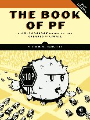

|
OpenBSD 5.5 May 1, 2014 
|
Every six months (around May 1 and Nov 1) OpenBSD makes an official software release.
To accompany this free software release on the FTP servers, we make
artwork and a song
which are distributed along with the software on a set of CDs. The
sale of these items retains the OpenBSD Project leader (Theo de Raadt)
to herd developers full-time towards a software release every 6 months.
We have a close relationship with our primary distributor the Computer Shop of Calgary who also sells our product worldwide direct to customers via post or courier. Worldwide orders for the new (and older) products can be made from the Computer Shop of Calgary order site. |
|
OpenBSD 5.5 To be released on May 1, 2014 Release CD
Poster  Puffy Mug  |
OpenBSD 5.4 Released on Nov 1, 2013 Release CD 
Absolute OpenBSD 2nd Edition  Book of PF 2nd Edition  |
|
The Computer Shop of Calgary distributes for the project and therefore has many of the older CDs and T-shirts, such as these and many more... |


 ... etc.
... etc.
|
|
Mailing address: Computer Shop of Calgary LTD. Box 267 Milk River, Alberta, Canada T0K 1M0 |
Physical address (couriers only): Computer Shop of Calgary LTD. 104 1st Avenue NW Milk River, Alberta Canada T0K 1M0 |
US mailing address: Computer Shop of Calgary LTD Box 28 Sweet Grass, MT 59484 USA |
Cost of bank wires outside the Euro zone are usually about $25 US or $25 Canadian, depending on destination bank and origin bank. We have to add these to the cost of the order, plus, there are costs at the sending end.
|
Mailing address Computer Shop of Calgary LTD. Box 267 Milk River, Alberta, Canada T0K 1M0 |
Physical address (couriers only) Computer Shop of Calgary LTD. 104 1st Avenue NW Milk River, Alberta Canada T0K 1M0 |
US mailing address Computer Shop of Calgary LTD Box 28 Sweet Grass, MT 59484 USA |
Postage will vary depending on your location relative to the shipping
address. Generally we will use our best judgment for class of service. For
some classes of service, where postal insurance is not available, or is
insufficient, we may add a few percent of the value of the package so that
on average we can cover replacement value for loss or damage, and include
that in our shipping cost computation. This percent will vary according to
our experience with different countries.
Special instructions should be specified in the comments of the order.
Tracking number and insurance is included for virtually all shipments to the USA, and for shipments outside the USA and Canada which weigh more than 2 Kg. For smaller international packages, tracking is usually not available unless very expensive classes of shipping are requested, which usually cost more than the value of the goods, so we don't recommend specifying them. In any case your package will be insured either by us or postal insurance.
From Canada to Canada, packages larger than 1 CD set are sent via Expedited Parcel by default. Tracking number notification is included in the postage cost. Insurance is included. Empress post, includes insurance up to $100 CDN. Packages will generally be mailed either from Milk River, Alberta, Canada, or Sweet Grass, Montana. Typical AIRMAIL postage rates for quantity one, of just the CD set, are roughly:
Note: Transit time estimates do not take into account the fact that shipping backlogs during the first month after a new release may require an extra one to two weeks before the package hits the mail. During the rest of the year turn-around is typically a few days.
Typical cost for Express Post for a single CD set:
To have the CD to come very quickly, choose a courier or similar service provided from the post office.
For courier service or equivalent 1 to 2 day service from the post office, you very likely do NOT want to use the Internet web ordering system, but rather want to order by phoning the Computer Shop. If phoning before 11 AM Mountain Time, you can sometimes have it by early the next morning! See phone ordering (above).
If ordering the release CDs plus other items, consider having only the CD sent by the faster methods and other things by regular airmail or even by surface. T-shirts, and especially posters, are quite expensive to send by fast methods relative to their value. Sometimes, particularly for posters, we will guess that this is what is wanted. Say in the comments if you really want all items, even posters, sent by Airmail or Express or courier methods.
For Canada, and USA only, one may specify "use credit card" in the box where it says courier account number. In that case we will pass on the credit card number to the courier company. There will be a separate debit from them (for the shipping portion only). But we prefer if you do have a courier account number already. If requesting shipping to a company address, ask if they have one that can be used (or phone DHL or UPS, for example, and ask what it is).
UPS, Purolator, DHL, or Postal courier shipping rates for quantity 1 are roughly:
Partial shipments: Sometimes a T-shirt of a certain size might not be in stock. We will sometimes not send final partial shipments by Express Post or courier even when Express Post or courier is specified on the order form. Give specific instructions in the comments of the order if wanting to override this possible judgement call on our part.
OpenBSD production is done by the Computer Shop of Calgary, which is located in the town of Milk River, Alberta, and does mail-order to anywhere in Canada very fast. Use the main OpenBSD order page for Canadian orders. All orders from Canada are handled in Canadian dollars.
kdump consulting online store
1578 Pujian Road
Shanghai China
201204
E-Mail: acheng@kdump.cn
Tel: +86 138 1829 3968
JIMAZ s.r.o.
Hermanova 17
170 00 Praha 7
Czech Republic
Contact Info
Tel: +420-242498393
Lehmanns Media GmbH
Hardenbergstraße 11
10623 Berlin / GERMANY
Web Ordering Form
Tel ++49 (0)30 - 61 79 11 - 21
Fax ++49 (0)30 - 61 79 11 - 33
Email: info@lehmanns.de
ixsoft
Softwareentwicklung und -vertrieb
Bernd Hentig
c/o verion GmbH
Unter den Buchen 22E
D-16244 Schorfheide
Germany
Web Ordering Form
Fon: +49 333 63 - 46 100
FAX: +49 333 63 - 46 109
eMail: sales@ixsoft.de
getDigital.de
getDigital.de ist ein Projekt von:
Stern & Schatz GmbH
Wellseedamm 18
24145 Kiel
Deutschland
Web Ordering Form
Tel.: +49 (0) 431 / 5907845
Fax: +49 (0) 431 / 7993964
URL: getDigital.de
Email: info@getdigital.de
Oeko.net
Oeko.net
Müller & Brandt
Werner-von-Siemens-Strasse 4
D-51674 Wiehl
Germany
Web Ordering Form
Fon: +49 2261 979364
FAX: +49 2261 979366
URL: Oeko.net
Mensys BV
Crayenestersingel 65
2012 PG Haarlem
The Netherlands
Tel: 023 5482020
Fax: 023 5482030
Email: info@mensys.nl
URL: www.mensys.nl
Computer Collectief
Sarphatistraat 13
1017 WS Amsterdam
Tel: 020-6223573
Fax: 020-6226668
URL: http://www.comcol.nl/detail/u_opeb.htm
Inferno Nettverk A/S
Oslo Research Park
Gaustadal\351en 21
N-0349 Oslo
Norway
Email: larry@inet.no
Tel: +47 2295 8303
Fax: +47 2260 4427
OpenBSD Europe
Zednax Limited
963 Stockport Road
Manchester
M19 3NP
E-Mail: orders@openbsdeurope.com
Tel: +44 333 444 0160
Orders to the UK and all over Europe
OpenBSD production is done by the Computer Shop of Calgary, which is located in the town of Milk River, Alberta, near the Montana border, so mail-order direct into the US is pretty fast.
Softpro Books
Denver, Colorado (location)
Orders received by 12 noon ship the same day.
Latest OpenBSD Release
You can also contact your favorite book seller and give them the current ISBN number, and ask them to special order for you. In fact this is a good way to help increase channels of distribution for OpenBSD, since if they get a number of orders, it may encourage them to stock it regularly in the future.